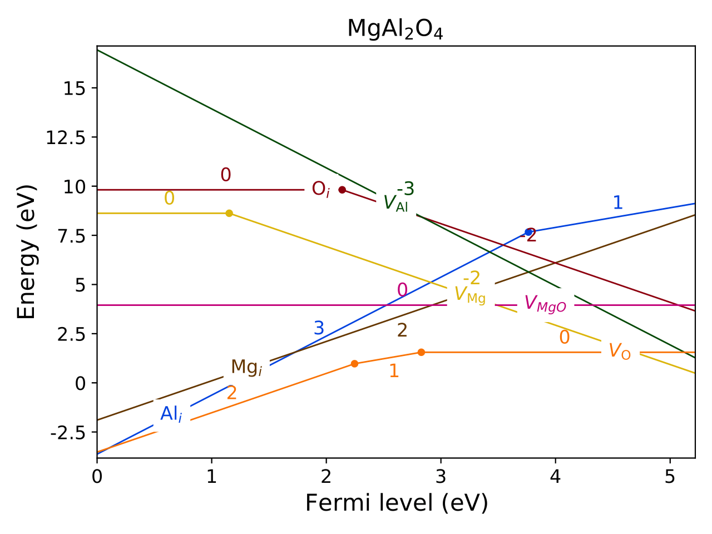

Tutorial of pydefect¶
This page illustrates how to use the pydefect code.
Note1: Pydefect now supports only the vienna ab-initio simulation package (VASP), so we suppose its input and output file names (e.g., POSCAR, POTCAR, OUTCAR), and computational techniques (e.g., periodic boundary condition) used in VASP.
Note2: Units used in pydefect are eV for energy and Angstrom for length following the vasp convention.
Note3: Only nonmagnetic host materials are supposed for now.
Workflow of a point-defect calculation in a non-metallic solid is shown below.
One can see some tasks are performed concurrently, while others must follow some tasks.
Usually, the processes are intricate and time consuming and researchers are prone to make mistakes.
The main purpose of pydefect is to provide the researchers
with the automation system for the point-defect calculations in non-metallic materials
so that they save time and reduce human errors.

This cheat sheet is divided into three parts, namely unitcell, cpd, and defect, which correspond to the working directories as shown below. The red texts indicate the related commands, while blue ones the files created with these commands. The branching steps provide for two options. The filled rectangles with blue color require the VASP calculations, while the bolded ones associate multiple directories related to defects considered. The green rectangle steps are not essential.
Here, we suppose the following directory tree.
The <project_name> is usually the target material name with the
crystal structure if needed, e.g., rutile-TiO2.
<project_name>
│
├ pydefect.yaml
├ vise.yaml
│
├ unitcell/ ── structure_opt/
│ ├ band/
│ ├ dielectric/
│ └ dos/
│
├ cpd/ ──── <competing_phase 1>
│ ├── <competing_phase 2>
│ ....
│
└ defect/ ── perfect/
├─ Va_X_0/
├─ Va_X_1/
├─ Va_X_2/
...
We recommend the users to follow the same directory structure if possible. Details of the processes are examined step by step with an example of MgAl2O4 calculated using the PBEsol functional.
In pydefect, there are five main commands, namely
pydefect, pydefect_vasp, pydefect_util,
pydefect_vasp_util, and pydefect_print.
Pydefect_vasp and pydefect_vasp_util are related to the VASP,
while pydefect and pydefect_util are independent of the DFT code.
Those consisting of a suffix, _util, are not essentially needed but are useful in some cases.
There are also many arguments for each sub-command.
One can always refer its help with the -h argument, e.g.,
pydefect s -h
for details.
1. Relaxation of the unit cell¶
The point-defect calculations are generally performed at the theoretically relaxed structure under the given functional and projector augmented wave (PAW) potentials, as it is free from artificial strain and stress that is responsible for the unwanted supercell size dependency. Therefore, one usually begins with optimizing lattice constants and fractional coordinates of the atomic positions in the unitcell.
We first prepare POSCAR of the pristine bulk unitcell,
and create unitcell/ directory and unitcell/structure_opt/
sub-directory ( mkdir -p unitcell/structure_opt/) and move there.
(In this tutorial, the name with / at the end means a directory.)
When pydefect needs to construct the vasp input files,
namely INCAR, POTCAR, KPOINTS files,
we use vise
(= vasp integrated supporting environment) code,
which generates the input files for various tasks and exchange-correlation (XC) functionals.
Vise relies on the pymatgen, and
therefore, as shown pymatgen web page 1 or
2,
we need to set the PMG_DEFAULT_FUNCTIONAL and PMG_VASP_PSP_DIR
in the .pmgrc.yaml file at the home directory, e.g.,
PMG_DEFAULT_FUNCTIONAL: PBE_54
PMG_MAPI_KEY: xxxxxxxxxxxxxxxx
PMG_VASP_PSP_DIR: /home/kumagai/potcars/
In pydefect, PMG_MAPI_KEY is required for querying
POSCAR files and total energies for competing materials.
Input files for optimizing a unitcell using the PBEsol functional are generated by the following command,
vise vasp_set -x pbesol
where vasp_set, or its abbreviation vs,
is a sub-command option of the vise main function.
Similarly, all the sub-commands have their own abbreviations
in pydefect and vise.
Here, the PBE functional is a default in vise,
so we use the -x argument to switch the XC functional to PBEsol.
Note that the structure optimization must be generally iterated with 1.3 times larger
cutoff energy until the forces and stresses are converged at the first ionic step.
See, vasp manual
for details.
Such iteration of the vasp calculations is not supported by pydefect,
but one can easily write the simple runshell script to do so.
In pydefect, users can control various default parameters as vise.yaml file in vise.
See the document of vise for details.
The controllable parameters are shown in defaults.py in pydefect.
2. Calculation of band, DOS, and dielectric tensor¶
We then calculate the band structure (BS), density of states (DOS), and dielectric constants. In the defect calculations, the BS is used for determining the valence band maximum (VBM) and conduction band minimum (CBM), while the dielectric constant, or a sum of electronic (or ion-clamped) and ionic dielectric tensors, is needed for correcting the defect formation energies.
First, we create band/, dos/ and dielectric/ in unitcell/
and copy POSCAR from unitcell/structure_opt/
and type the following command in each directory:
vise vs -x pbesol -t band -d ../structure_opt
vise vs -x pbesol -t dos -d ../structure_opt -uis LVTOT True LAECHG True KPAR 1
vise vs -x pbesol -t dielectric_dfpt -d ../structure_opt
The additional user_incar_settings (=uis) in the dos directory are for creating volumetric
data of electrostatic potential and all electron charge density.
Vise also provides the plotters for the BS and DOS.
See the document of vise for details.
4. Calculation of competing phases¶
When a defect is introduced, atoms are exchanged with the hypothetical atomic reservoirs within the thermodynamics framework. To calculate a free energy of defect formation that is approximated with the defect formation energy in most cases, we need to determine atom’s chemical potentials associated with defects. Usually, we consider the chemical potentials at the condition where competing phases coexist with the host material, which are determined from the chemical potential diagram (CPD).
For this purpose, we create directories in cpd/.
We can retrieve POSCARs of the stable or slightly unstable competing phases
from the Materials Project database (MPD).
For this purpose, one needs the API keys
of the MP as mentioned above.
We obtain the competing materials with MgAl2O4 whose energies above hull are less than 0.5 meV/atom using
pydefect_vasp mp -e Mg Al O --e_above_hull 0.0005
This command creates the following directories:
Al2O3_mp-1143/ Al_mp-134/ Mg149Al_mp-1185596/ Mg17Al12_mp-2151/ MgAl2O4_mp-3536/ MgAl2_mp-1094116/ MgO_mp-1265/ Mg_mp-1056702/ mol_O2/
We here remove Mg149Al_mp-1185596/ to reduce computational time in this tutorial.
In each directory, there are POSCAR and prior_info.yaml.
The prior_info.yaml contains some information retrieved from the MPD,
which is useful for determining the conditions for the first-principles calculations via vise.
For example, Mg_mp-1056702/prior_info.yaml is shown as
band_gap: 0.0
data_source: mp-1056702
total_magnetization: 0.0007357
which means Mg is a non-magnetic metallic system.
Vise parses the prior_info.yaml
and determines the k-point density in KPOINTS
and spin polarization via ISPIN tag in INCAR.
If the retrieved values are obviously incorrect, the user may change the values by hand.
O2, H2, N2, NH3, and NO2 molecules
are not retrieved from the MPD but created by pydefect itself,
since these compositions have been calculated as solids in the MPD,
which could be inadequate for competing phases for the defect calculations.
We then generate INCAR, POTCAR, KPOINTS files for these.
We need to use the common cutoff energy, ENCUT, for comparing the total energies,
which is increased to 1.3 times of max ENMAX between the constituent POTCARs.
In case of MgAl2O4, ENMAX of Mg, Al, and O are 200.0, 240.3 and 400.0 eV,
so we need to set ENCUT = 520.0, using the vise.
for i in *_*/;do cd $i; vise vs -uis ENCUT 520.0 -x pbesol ; cd ../;done
The target material, namely MgAl2O4 in this example, has already been calculated in the same condition,
so we do not have to iterate the same calculation;
instead make a symbolic link by ln -s ../unitcell/structure_opt MgAl2O4
and remove the MgAl2O4_mp-3536/ directory.
However, we need to calculate it, when we adopt different ENMAX
to keep consistency with larger ENMAX for dopant atoms.
Note also that, if competing phases are gases, we need to change
ISIF to 2 so as not to relax the lattice constants
(see [vasp manual]),
and KPOINTS to the Gamma-point-only sampling.
This is, however, automatically tuned with vise via prior_info.yaml.
After finishing the vasp calculations,
we can generate the composition_energies.yaml file,
which collects the total energies per calculated formula
using the make_composition_energies (= mce) sub-command.
pydefect_vasp mce -d *_*/
When renaming the vasprun.xml and OUTCAR files to e.g.,
vasprun-finish.xml and OUTCAR-finish during the calculations,
one needs to write the following lines in the vise.yaml file:
# VASP file names
outcar: OUTCAR-finish
vasprun: vasprun-finish.xml
We next create relative_energies.yaml and standard_energies.yaml
with the standard_and_relative_energies (= sre) sub-command.
pydefect sre
The standard_energies.yaml file collects the absolute energies under the standard states as shown.
Al: -4.08372115
Mg: -1.70955951
O: -5.139183685
while relative_energies.yaml includes the relative energies with respect to the standard states.
Al2O3: -3.149440234
Mg17Al12: -0.02717980137931031
MgAl2: -0.015118513333333805
MgAl2O4: -3.097731276428572
MgO: -2.8318186275
We then make information on the CPD using the cpd_and_vertices sub-command.
pydefect cv -t MgAl2O4
To plot the diagram, use the plot_cpd (= pc) sub-command:
pydefect pc
which also save the diagram as cpd.pdf.
The binary and ternary CPDs look like


Here, the vertices surrounding the target compounds are also shown as follows:
target: MgAl2O4
A:
chem_pot:
Al: 0.0
Mg: -0.68785
O: -5.24907
competing_phases:
- Al2O3
- Al
impurity_phases: []
B:
chem_pot:
Al: 0.0
Mg: -0.32348
O: -5.34016
competing_phases:
- MgO
- Al
impurity_phases: []
C:
chem_pot:
Al: -7.8736
Mg: -5.93692
O: 0.0
competing_phases:
- Al2O3
- O
impurity_phases: []
D:
chem_pot:
Al: -8.01024
Mg: -5.66364
O: 0.0
competing_phases:
- MgO
- O
impurity_phases: []
If one needs to modify the energies for the CPD,
one can directly modify the relative_energies.yaml file.
Calculations of the competing phases are often laborious,
and sometimes we want to check the defect formation energies sooner.
Pydefect supports to create the CPD based on the MPD.
To do this, one firstly prepare atom energies that are needed for aligning the energy standards.
With vise, we can easily prepare atom calculation directories.
Here, we show an example of MgAl2O4:
vise_util map -e Mg Al O
Then, create the vasp input files
for i in */;do cd $i; vise vs ; cd ../;done
and run the vasp. The atom energies are collected to yaml file format using the following python script.
from pymatgen.core import Element
from pymatgen.io.vasp import Outcar
for e in Element:
try:
o = Outcar(str(e) + "/OUTCAR-finish")
name = str(e) + ":"
print(f"{name:<3} {o.final_energy:11.8f}")
except:
pass
Assuming the output is saved to atom_energies.yaml,
the composition_energies.yaml file is generated using the following command.
pydefect_util cefm -a atom_energies.yaml -e Mg Al O
Once composition_energies.yaml is obtained, the following steps are the same as above.
5. Construction of a supercell and defect species¶
We have finished the calculations of the unit cell and CPD,
and now are ready for the point-defect calculations.
Let’s create the defect/ directory.
We then create files related to a supercell and defect species with
the supercell (= s) and defect_set (= ds) sub-commands.
Pydefect recommends a nearly isotropic (and sometimes cubic-like) supercell
composed of moderate number of atoms.
With the following command, one can create a SPOSCAR file
pydefect s -p ../unitcell/structure_opt/CONTCAR-finish
If the input structure is different from the standardized primitive cell, NotPrimitiveError is raised.
At present, pydefect constructs the supercell by expanding the conventional unitcell.
Generally speaking, it is possible to change the lattice angle of the supercell from those of the conventional unitcell.
For example, we can make a supercell in which a-, b-, and c-axes are mutually orthogonal for hexagonal systems.
However, it is not a good idea because such the lattice breaks the original symmetry,
which reduces the accuracy of the point-defect calculations and makes it difficult to analyze the symmetry at the defect site.
Therefore, we basically expand the lattice vector in their original directions.
One exception is the tetragonal cell, where the rotated supercells by 45 degrees keep the original symmetries.
In pydefect, users can also specify the cell matrix, e.g.,
pydefect s -p ../unitcell/structure_opt/CONTCAR-finish --matrix 2 1 1
The matrix is applied to the conventional cell. Note, again, that if the symmetry is changed using an anisotropic supercell, the following symmetry analysis is generally incorrect.
If one wants to know the conventional cell, type
vise si -p ../unitcell/structure_opt/CONTCAR-finish -c
See the help message for more details.
Since json files are generally less readable than yaml files,
we implement the pydefect_print command to generate readable command lines
from json files, which can be used as follows,
pydefect_print supercell_info.json
The supercell_info.json file is then shown as follows:
Space group: F-43m
Transformation matrix: [-2, 2, 2] [2, -2, 2] [2, 2, -2]
Cell multiplicity: 32
Irreducible element: Mg1
Wyckoff letter: a
Site symmetry: -43m
Cutoff radius: 3.373
Coordination: {'Se': [2.59, 2.59, 2.59, 2.59]}
Equivalent atoms: 0..31
Fractional coordinates: 0.0000000 0.0000000 0.0000000
Electronegativity: 1.31
Oxidation state: 2
Irreducible element: Se1
Wyckoff letter: c
Site symmetry: -43m
Cutoff radius: 3.373
Coordination: {'Mg': [2.59, 2.59, 2.59, 2.59]}
Equivalent atoms: 32..63
Fractional coordinates: 0.1250000 0.1250000 0.1250000
Electronegativity: 2.55
Oxidation state: -2
With the defect_set (= ds) sub-command, we can build the defect_in.yaml file.
An example of defect_in.yaml for MgSe looks as follows,
Al_Mg1: [-1, 0, 1]
Al_O1: [-1, 0, 1, 2, 3, 4, 5]
Mg_Al1: [-1, 0, 1]
O_Al1: [-5, -4, -3, -2, -1, 0, 1]
Va_Al1: [-3, -2, -1, 0, 1]
Va_Mg1: [-2, -1, 0]
Va_O1: [0, 1, 2]
where the combination of defect species and their charges are tabulated.
We can modify this file by hand if necessary or using --keywords option.
If we want to add dopants, we can type as follows:
pydefect ds -d Ca
There are some tips related to supercell_info.json and defect_in.yaml.
1. The antisites and substituted defect species are determined from the difference of
the electronegativity between the substituted and removed atoms.
Default max difference is written in defaults.py,
but one can change it via pydefect.yaml.
Since pydefect uses the DefaultsBase in vise, the
rules are the same as vise.yaml
except for the keywords.
2. The oxidation states determine the defect charge states.
For instance, the vacancies of Sn2+ may take 0, -1, or -2 charge states,
while those of Sn4+ between 0 and -4 charge states.
For the antisites and substituted defects,
pydefect considers all the possible combinations of vacancies and interstitials.
So, for example, Sn2+ -on-S2- takes 0, +1, +2, +3, and +4 charge states.
The oxidation states are determined using the oxi_state_guesses method of
Composition class in pymatgen.
The users can also manually set the oxidation states as follows:
pydefect ds --oxi_states Mg 4
However, the recommended charge states may not be enough in some cases. For instance, the Zn vacancies in ZnO are known to show the +1 charge state because they can capture multiple polarons at the neighboring O sites. See Frodason et al., Phys. Rev. B (2017) Users have to add these outliers by themselves.
3. By default, positions of atoms near the defect are perturbed
such that the symmetry is lowered to the P1 symmetry.
This is, however, unwanted in some cases because it increases the number of irreducible k-points
Then, displace_distance needs to be set to 0 via pydefect.yaml.
4. If one wants to calculate particular defects e.g., only oxygen vacancies,
you can restrict the calculated defects with -k option and a python regular expression,
For example, when typing as follows,
pydefect ds -k "Va_O[0-9]?_[0-9]+"
the following directories are created.
perfect/ Va_O1_0/ Va_O1_1/ Va_O1_2/
For regular expression, see Regular expression operations.
6. Decision of interstitial sites¶
In addition to the vacancies and substituted defects, one may want to take into account the interstitials. Most people determine them by seeing the host crystal structures, while there are a couple of procedures that recommend the interstitial sites. It is, However, generally not an easy task to speculate the most likely interstitial sites because they depend on the combination of the host and substituted elements.
The largest vacant space should be most likely interstitial sites for positively charged cations with closed shells (e.g., Mg2+, Al3+), as they tend not to make strong bonding with other atoms. On the other hand, a proton (H+) prefers to be located near O2- or N3- to form the strong O-H or N-H bonding. Conversely, a hydride ion (H-) should tend to be located at a very much different place. Therefore, we need to carefully determine the interstitial sites.
Pydefect holds a utility that recommends the interstitial sites based on
volumetric data such as the all electron charge density in the unitcell
using the ChargeDensityAnalyzer class implemented in pymatgen.
To use this, we need to generate volumetric data, e.g., AECCAR and LOCPOT,
based on the standardized primitive cell.
This has been already done in this tutorial at the DOS calculation.
This should not be done in general at the band structure calculations,
because the primitive cells may be different from the standardized primitive cell.
After running the vasp calculation, use the following command in the directory including AECCAR{0,2}.
pydefect_vasp le -v AECCAR{0,2} -i all_electron_charge
, which shows the local minima of the charge density as follows.
a b c value ave_value
0 0.125 0.125 0.125 3.387930 0.029844
1 0.625 0.125 0.125 3.383668 0.029845
2 0.125 0.625 0.125 3.383668 0.029845
3 0.125 0.125 0.625 3.383445 0.029845
4 0.500 0.500 0.500 16.501119 0.155178
5 0.750 0.750 0.750 16.501119 0.155178
More details are shown in volumetric_data_local_extrema.json,
which can be checked with the pydefect_print command.
info: all_electron_charge
min_or_max: min
extrema_points:
# site_sym coordination frac_coords quantity
1 -3m {'Mg': [1.75, 1.75], 'O': [2.14, 2.14, 2.14, 2.14, 2.14, 2.14]} ( 0.125, 0.125, 0.125) 0.03
2 -43m {'Al': [1.75, 1.75, 1.75, 1.75], 'O': [1.57, 1.57, 1.57, 1.57]} ( 0.500, 0.500, 0.500) 0.16
Note, again, that the local minima may not be the best initial points for some interstitials, so users must need to recognize the limit of this procedure.
To add the two interstitial sites,
we use the add_interstitials_from_local_extrema (= ai) sub-command as follows:
pydefect_util ai --local_extrema ../unitcell/dos/volumetric_data_local_extrema.json -i 1 2
The supercell_info.json file holds the information on the interstitial sites.
...
-- interstitials
#1
Info: all_electron_charge #1
Fractional coordinates: 0.1250000 0.1250000 0.1250000
Site symmetry: -3m
Coordination: {'Mg': [1.75, 1.75], 'O': [2.14, 2.14, 2.14, 2.14, 2.14, 2.14]}
#2
Info: all_electron_charge #2
Fractional coordinates: 0.5000000 0.5000000 0.5000000
Site symmetry: -43m
Coordination: {'Al': [1.75, 1.75, 1.75, 1.75], 'O': [1.57, 1.57, 1.57, 1.57]}
To pop the interstitial sites, use
pydefect pi -i 1 -s supercell_info.json
With this, the first interstitial site is removed from supercell_info.json.
...
-- interstitials
#1
Info: all_electron_charge #2
Fractional coordinates: 0.5000000 0.5000000 0.5000000
Site symmetry: -43m
Coordination: {'Al': [1.75, 1.75, 1.75, 1.75], 'O': [1.57, 1.57, 1.57, 1.57]}
To consider these interstitials in defect_in.yaml, run the defect_set sub-command again.
7. Creation of defect calculation directories¶
We next create directories for the point-defect calculations
with the defect_entries (= de) sub-command,
pydefect de
With this command, the directories with defect names are created, including perfect/.
If you again type the same command, the following information appears,
INFO: perfect dir exists, so skipped...
INFO: Al_i1_1 dir exists, so skipped...
INFO: O_i1_0 dir exists, so skipped...
INFO: Mg_i1_1 dir exists, so skipped...
INFO: Mg_i1_2 dir exists, so skipped...
INFO: Al_i1_3 dir exists, so skipped...
INFO: Mg_i1_0 dir exists, so skipped...
INFO: Al_i1_-1 dir exists, so skipped...
INFO: Al_i1_2 dir exists, so skipped...
INFO: Va_O1_1 dir exists, so skipped...
INFO: Va_Al1_-3 dir exists, so skipped...
INFO: Va_O1_0 dir exists, so skipped...
INFO: Va_Al1_0 dir exists, so skipped...
INFO: Va_O1_2 dir exists, so skipped...
INFO: O_i1_-2 dir exists, so skipped...
INFO: O_i1_-1 dir exists, so skipped...
INFO: Va_Mg1_0 dir exists, so skipped...
INFO: Va_Al1_-1 dir exists, so skipped...
INFO: Va_Al1_-2 dir exists, so skipped...
INFO: Va_Mg1_-2 dir exists, so skipped...
INFO: Va_Mg1_-1 dir exists, so skipped...
INFO: Al_i1_0 dir exists, so skipped...
INFO: Va_Al1_1 dir exists, so skipped...
and no directories are newly created. This is a fail-safe treatment so as not to delete the calculated directories by mistake. If you really want to recreate the directories, you need to remove them first.
In each directory, one can find there is a defect_entry.json file,
which contains information about a point defect obtained before running the first-principles calculations.
To see defect_entry.json, again use the pydefect_print command.
-- defect entry info
name: Va_O1_0
site symmetry: .3m
defect center: ( 0.861, 0.861, 0.861)
perturbed sites:
elem dist initial_coords perturbed_coords displacement
Al 1.92 ( 0.625, 0.875, 0.875) -> ( 0.637, 0.885, 0.864) 0.15
Al 1.92 ( 0.875, 0.625, 0.875) -> ( 0.879, 0.622, 0.884) 0.09
Al 1.92 ( 0.875, 0.875, 0.625) -> ( 0.875, 0.875, 0.624) 0.01
Mg 1.94 ( 1.000, 1.000, 1.000) -> ( 0.004, 0.001, 0.006) 0.06
8. Generation of defect_entry.json¶
Sometimes, one may want to treat complex defects. For instance, O2 molecules act as anions in MgO2, where O2 molecule vacancies may be able to exist sufficiently. Other important examples are the methylammonium lead halides (MAPI), where methylammonium ions acts as singly positive cations (CH3NH3+), and DX centers, where anion vacancies and interstitial cations coexist.
In these cases, one needs to prepare the input files and runs the vasp calculations by oneself.
However, pydefect necessitates the defect_entry.json file for the postprocess,
which cannot be easily generated by the users.
In aid of this, pydefect provides the sub-command to create defect_entry.json,
by analyzing the structure difference between the defect structure and perfect supercell structure.
The charge is determined from the INCAR, POSCAR, and POTCAR files.
pydefect_vasp_util de -d . -p ../perfect/POSCAR -n complex_defect
This sub-command can also be used when one wants to use pydefect
for analyzing the defect calculations that were already done previously.
9. Parsing supercell calculation results¶
We next run the vasp calculations on the point defects. To create the vasp input files, type
for i in */;do cd $i; vise vs -t defect ; cd ../;done
Do not forget to add the -t defect option, to create the input files for defects.
When running the vasp calculations, we recommend the users to use the Gamma-only version if the k point is sampled only at the Gamma point for large supercells.
After finishing the vasp calculations,
we can generate the calc_results.json that contains
the first-principles calculation results related to the defect properties.
By using the calc_results (= cr) sub-command,
we can generate calc_results.json in all the calculated directories.
pydefect cr -d *_*/ perfect
When the calculations are in-progress, parsing of their directories are skipped automatically.
10. Corrections of defect formation energies in finite-size supercells¶
When the supercell is adopted under the periodic boundary condition, the total energies for charged defects are not properly estimated due to interactions between a defect, its images, and background charge. Therefore, we need to correct the total energies of the charged defect supercells to those in the dilution limit.
The corrections are performed using the extended_fnv_correction (= efnv) sub-command,
pydefect efnv -d *_*/ -pcr perfect/calc_results.json -u ../unitcell/unitcell.yaml
For the corrections, we need the static dielectric constants
and atomic site potentials in the perfect supercell.
Therefore, the paths to unitcell.yaml and calc_results.json
in the perfect directory must be assigned.
Bear also in mind that this command takes some time.
The energy correction in pydefect at this moment is now performed with
the so-called extended Freysoldt-Neugebauer-Van de Walle (eFNV) method.
If one uses the corrections, please cite the following papers.
One obtains correction.pdf file, which contains information
about defect-induced and point-charge potential,
and their differences at atomic sites as shown below.

The height of the horizontal line indicates the averaged potential difference between the point-charge potential and that caused by the defect, namely potential in the defective supercell minus that in the perfect supercell. The range of the line means the averaged region. See Y. Kumagai* and F. Oba (2014) for details.
When performing the corrections, it is strongly recommended to check
all the correction.pdf files for the calculated defects
so as to reduce careless mistakes as much as possible.
11. Check defect structures¶
We analyze the defect local structures using the defect_structure_info (= dsi) sub-command.
pydefect dsi -d *_*/
The defect_structure_info.json files are created, which are shown using pydefect_print command as follows:
-- defect structure info
Defect type: vacancy
Site symmetry: -3m -> -3m (same)
Has same configuration from initial structure: True
Drift distance: 0.022
Defect center: ( 0.625, 0.375, 0.372)
Removed atoms:
8 Al ( 0.625, 0.375, 0.375)
Neighbor max distance 2.472
Displacements
Elem Dist Displace Angle Index Initial site Final site Neighbor
O 1.9 0.26 160 46 ( 0.639, 0.361, 0.139) -> ( 0.647, 0.353, 0.108) T
O 1.92 0.26 160 42 ( 0.639, 0.139, 0.361) -> ( 0.647, 0.110, 0.351) T
O 1.92 0.26 160 26 ( 0.861, 0.361, 0.361) -> ( 0.890, 0.353, 0.351) T
O 1.92 0.24 170 47 ( 0.389, 0.389, 0.389) -> ( 0.360, 0.396, 0.394) T
O 1.93 0.24 170 31 ( 0.611, 0.611, 0.389) -> ( 0.604, 0.639, 0.394) T
O 1.94 0.23 160 35 ( 0.611, 0.389, 0.611) -> ( 0.604, 0.396, 0.637) T
Al 2.85 0.03 30 14 ( 0.625, 0.125, 0.125) -> ( 0.627, 0.128, 0.127)
Al 2.85 0.03 30 21 ( 0.875, 0.375, 0.125) -> ( 0.872, 0.373, 0.127)
Al 2.87 0.05 40 16 ( 0.875, 0.125, 0.375) -> ( 0.872, 0.128, 0.372)
We can also create VESTA file for analyzing the defect structure using the defect_vesta_file(=dvf) sub-command in pydefect_util.
pydefect_util dvf -d *_*
which creates defect.vesta files.
12. Check defect eigenvalues and band-edge states in supercell calculations¶
** Note: This section is optional.**
Generally, point defects are categorized into three types.
(1) Defects with deep localized states located inside the band gap. This type of defect is generally considered to be detrimental for device performances as the carriers are trapped by the localized states. Furthermore, they could act as color centers, as represented by the vacancies in NaCl. Therefore, it is important to know the position of the localized state and its origin.
(2) Defects with hydrogenic carrier states, or perturbed host states (PHS), where carriers are located at the band edges with loosely trapped by the charged defect centers. Examples are the B-on-Si (p-type) and P-on-Si (n-type) substitutional dopants in Si. These defects also do little harm for device performances, but introduce the carrier electrons/holes or kill counter carriers. The wavefunctions of the PHS could distribute over several million atoms. Therefore, calculations of their thermodynamical transition levels require supergiant supercell calculations, which are almost prohibitive with first-principles calculations thus far. Therefore, we instead usually avoid calculating these quantities and denote that the defects have PHS and their transition energies are located near the band edges only qualitatively.
(3) Defects without any defect states inside the band gap or near the band edges, which would not largely affect the electronic properties as long as their concentrations are not exceedingly high.
See some examples from our published papers.
To distinguish these three types of defects, one needs to look see the defect levels and orbitals and judge if the defects create the PHS and/or defect localized states.
Pydefect analyzes the eigenvalues and band-edge states by the following steps.
Firstly, one generates the perfect_band_edge_state.json files
using the perfect_band_edge_state sub-command,
which shows the information on the eigenvalues and orbital information of the VBM and CBM in the perfect supercell.
pydefect_vasp pbes -d perfect
The band_edge_orbital_infos.json files are then created at defect directories using
the band_edge_orbital_infos (= beoi) sub-command.
pydefect_vasp beoi -d *_* -pbes perfect/perfect_band_edge_state.json
The eigenvalues.pdf files are also created.

Here, one can see single-particle levels and their occupation in the spin-up and -down channels. The x-axis is fractional coordinates of the calculated k points, while the y-axis in the absolute energy scale. Filled circles inside the figures are single particle levels at each k point. If the defect is spin polarized, two panels are shown; the left one is for spin up while the right one for spin down.
Two horizontal dashed lines indicate the VBM and CBM in the perfect supercell. The discrete numbers in the figures mean the band indices starting from 1, and the filled red, green, and blue circles mean the occupied, partially occupied (from 0.2 to 0.8), and unoccupied eigenstates, respectively.
We then generate the edge_characters.json files
with the band_edge_states (= bes) sub-command.
pydefect bes -d *_*/ -pbes perfect/perfect_band_edge_state.json
Using the pydefect_print command, the file shows
-- band-edge states info
Spin-up
Index Energy P-ratio Occupation OrbDiff Orbitals K-point coords
VBM 128 3.727 0.33 1.00 0.02 O-p: 0.76 ( 0.250, 0.250, 0.250)
CBM 129 9.980 0.06 0.00 0.03 Al-s: 0.11, O-s: 0.21, O-p: 0.11 ( 0.250, 0.250, 0.250)
vbm has acceptor phs: False (0.000 vs. 0.2)
cbm has donor phs: False (0.000 vs. 0.2)
---
Localized Orbital(s)
Index Energy P-ratio Occupation Orbitals
Spin-down
Index Energy P-ratio Occupation OrbDiff Orbitals K-point coords
VBM 126 4.083 0.67 0.88 0.06 O-p: 0.72 ( 0.250, 0.250, 0.250)
CBM 129 10.010 0.06 0.00 0.01 O-s: 0.21, O-p: 0.11 ( 0.250, 0.250, 0.250)
vbm has acceptor phs: False (0.120 vs. 0.2)
cbm has donor phs: False (0.000 vs. 0.2)
---
Localized Orbital(s)
Index Energy P-ratio Occupation Orbitals
127 4.277 0.62 0.06 O-p: 2.98
128 4.278 0.62 0.06 O-p: 2.98
The orbital information at each spin channel is shown.
Here, P-ratio means the participation ratio,
which is a ratio of the projected orbitals at the neighboring atoms shown in the defect_structure_info.json
to the sum of those at all the sites.
As mentioned, the formation energies of the defects with the occupied
donor phs or unoccupied acceptor phs should be omitted from the energy plot.
In pydefect, the donor phs and acceptor phs are determined from the eigenvalues
and the similarity of the wavefunction to those of the VBM and CBM.
See our paper that will appear soon for details.
We emphasize that the automatically determined band-edge states could be incorrect as it is generally difficult to determine them automatically. Therefore, please carefully check the band-edge states, and draw their band-decomposed charge density if the band-edge states are not obvious.
13. Plot defect formation energies¶
Here, we show how to plot the defect formation energies.
The plot of the defect formation energies requires multiple information, namely the band edges, chemical potentials of the competing phases, and total energies of the perfect and defective supercells.
Firstly, we use the defect_energy_infos (= dei) sub-command,
pydefect dei -d *_*/ -pcr perfect/calc_results.json -u ../unitcell/unitcell.yaml -s ../cpd/standard_energies.yaml
which creates the defect_energy_info.yaml files in defect directories.
An example is shown as follows:
name: Va_O1
charge: 0
formation_energy: 6.803585744999999
atom_io:
O: -1
energy_corrections:
pc term: 0.0
alignment term: -0.0
is_shallow: False
Caveats: (1) The formation_energy is the defect formation energy estimated under the situation where elements’ chemical potentials are set at their standard states and the Fermi level is located at energy zero. (2) Two energy_corrections are written but one can add their original correction if needed. (3) is_shallow is empty when the previous section is skipped. One can modify the calculation results such as shallow states manually by hand.
We then create a defect_energy_summary.json file with the defect_energy_summary (= des) sub-command.
pydefect des -d *_*/ -u ../unitcell/unitcell.yaml -pbes perfect/perfect_band_edge_state.json -t ../cpd/target_vertices.yaml
This sub-command collect the information written in the defect_energy_info.yaml files to defect_energy_summary.json.
title: MgAl₂O₄
rel_chem_pots:
-A Al: 0.00 Mg: -0.69 O: -5.25
-B Al: 0.00 Mg: -0.32 O: -5.34
-C Al: -7.87 Mg: -5.94 O: 0.00
-D Al: -8.01 Mg: -5.66 O: 0.00
vbm: 0.00, cbm: 5.22, supercell vbm: -0.03, supercell_cbm: 6.14
name atom_io charge energy correction is_shallow
------ ------------ -------- -------- ------------ ------------
Al_i1 Al: 1 -1 14.958 -0.049 False
0 9.896 0.000 True
1 3.376 0.527 False
2 -0.872 1.814 True
3 -6.994 3.370 False
Mg_i1 Mg: 1 0 8.208 0.000 True
1 2.015 0.555 True
2 -4.117 1.534 False
O_i1 O: 1 -2 8.122 0.721 False
-1 7.055 0.149 False
0 4.566 0.000 False
Va_Al1 Al: -1 -3 13.527 3.402 False
-2 12.968 1.789 True
-1 12.672 0.660 True
0 12.595 0.000 True
1 12.710 -0.232 True
Va_Mg1 Mg: -1 -2 10.093 1.524 False
-1 9.580 0.578 True
0 9.311 0.000 False
Va_MgO O: -1 Mg: -1 0 9.887 0.000 False
Va_O1 O: -1 0 6.804 0.000 False
1 3.808 0.166 False
2 0.883 0.845 False
We can also create the calc_summary.json file with the calc_summary (= cs) sub-command.
pydefect cs -d *_*/ -pcr perfect/calc_results.json
which shows
|:---------:|:----------:|:-----------:|:-----------------:|:------------:|:------------------:|:--------------:|
| name | Ele. conv. | Ionic conv. | Is energy strange | Same config. | Defect type | Symm. Relation |
| Al_i1_-1 | . | . | . | False | unknown | subgroup |
| Al_i1_0 | . | . | . | False | unknown | subgroup |
| Al_i1_1 | . | . | . | False | unknown | subgroup |
| Al_i1_2 | . | . | . | . | . | . |
| Al_i1_3 | . | . | . | . | . | . |
| Mg_i1_0 | . | . | . | . | . | . |
| Mg_i1_1 | . | . | . | . | . | . |
| Mg_i1_2 | . | . | . | . | . | . |
| O_i1_-1 | . | . | . | . | . | . |
| O_i1_-2 | . | . | . | False | interstitial_split | subgroup |
| O_i1_0 | . | . | . | . | . | . |
| Va_Al1_-1 | . | . | . | . | . | . |
| Va_Al1_-2 | . | . | . | . | . | . |
| Va_Al1_-3 | . | . | . | . | . | . |
| Va_Al1_0 | . | . | . | . | . | . |
| Va_Al1_1 | . | . | . | . | . | . |
| Va_Mg1_-1 | . | . | . | . | . | . |
| Va_Mg1_-2 | . | . | . | . | . | . |
| Va_Mg1_0 | . | . | . | . | . | . |
| Va_MgO_0 | . | . | . | False | unknown | same |
| Va_O1_0 | . | . | . | . | . | . |
| Va_O1_1 | . | . | . | . | . | . |
| Va_O1_2 | . | . | . | . | . | . |
However, this is still a beta version.
Finally, the defect formation energies are plotted as a function of the Fermi level
with the plot_defect_formation_energy (= pe) sub-command
pydefect pe -d defect_energy_summary.json -l A
which shows like,
When changing the condition of the chemical potential,
namely the position of the vertex in the chemical potential diagram,
use the -l option.